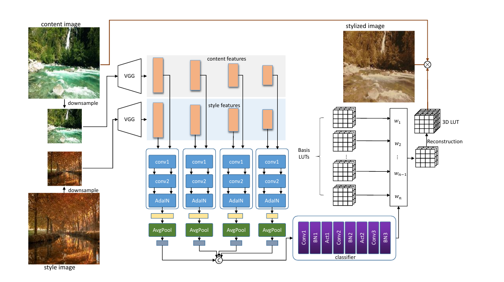

Transferring photorealistic style with a style image for the video.Given a content video and a style image, our method is able to efficiently generate photorealistic stylized video.
Abstract
Video photorealistic style transfer is desired to generate videos with a similar photorealistic style to the style image while maintaining temporal consistency. However, existing methods obtain stylized video sequences by performing frame-by-frame photorealistic style transfer, which is inefficient and does not ensure the temporal consistency of the stylized video. To address this issue, we use neural network-based 3D Lookup Tables (LUTs) for the photorealistic transfer of videos, achieving a balance between efficiency and effectiveness. We first train a neural network for generating photorealistic stylized 3D LUTs on a large-scale dataset; then, when performing photorealistic style transfer for a specific video, we select a keyframe and style image in the video as the data source and fine-turn the neural network; finally, we query the 3D LUTs generated by the fine-tuned neural network for the colors in the video, resulting in a super-fast photorealistic style transfer, even processing 8K video takes less than 2 millisecond per frame. The experimental results show that our method not only realizes the photorealistic style transfer of arbitrary style images but also outperforms the existing methods in terms of visual quality and consistency. Project page:https://semchan.github.io/NLUT_Project.
Approach
In our network structure, we first extract the features of a pair of down-sampled style image and content image by the pre-trained VGG model. Then, further feature extraction and fusion of content features and style features of different scales are performed respectively. Finally, a classifier is used to predict the weight of the linear combination of basic LUTs. The parameters of the basic LUTs are learned simultaneously with the network. During the stylization process, only the content image is needed as input, and the reconstructed 3D LUT is used for colour query and interpolation to output the stylized image.

Overview of neuarl-based 3D lookup tables for video photorealistic style transfer. (a). First, we randomly sample the style image and content image on a large-scale image dataset to train a neural LUT Network and the initial 3D LUT; (b). Then we use the trained Neural LUT Network and 3D LUT to conduct tuning training on the content image from the specified video and the specified style image to generate an optimal style 3D LUT; (c). Finally, we use the generated style 3D LUT to interpolate and look up the colors in the content video to get the stylized video.
Results
Comparison
Consistency amd Efficiency Comparison:
GPU Usage:
userstudy:
BibTeX
@misc{chen2023nlut,
title={NLUT: Neural-based 3D Lookup Tables for Video Photorealistic Style Transfer},
author={Yaosen Chen; Han Yang;Yuexin Yang;Yuegen Liu;Wei Wang; Xuming Wen; Chaoping Xie},
year={2023},
eprint={2302.xxx},
archivePrefix={arXiv},
primaryClass={cs.CV}
}